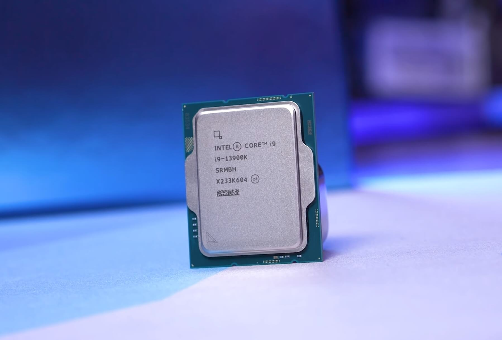

Parts You Need to Build a desktop computer
Processor (CPU)
What is a CPU?
The processor or Central Processing Unit (CPU), is the brain of the PC. It's what converts the instructions you provide into actions the computer can execute, and tells all the other parts of your build how to work together. If the CPU is the brain, the rest of the system is the body. A modern desktop PC will use either an Intel or AMD cpu
The CPU is probably the single most important component for any computer, and as you'd expect there are almost endless options at a variety of price ranges. For AMD you'll most likely be looking at a 7000 series Ryzen CPU if you want high-end. Intel's Core i designated CPUs are all solid choices, you'll most likely be using a 13th Gen i9, i7, i5 or i3 processor if you're looking to put together a gaming or streaming rig.
Motherboard
What is a motherboard?
The motherboard is a large circuit board that connects all the components that make up your PC, and allows communication between all the different hardware.
The type of motherboard you need depends on what CPU you purchased and what features you're interested in. Not every CPU works with every motherboard, so you'll want to make sure you get the right one. Features like CPU overclocking capabilities, lighting, and connectivity options are all factors to keep in mind when purchasing a motherboard.


Graphics card (GPU)
What is a GPU?
The Graphics card or Graphics Processing Unit (GPU) will have the most impact on your gaming experience. The GPU is essentially what allows your computer to do the complex graphics calculations that allow your PC games to look so good. Though many CPUs have integrated graphics, a GPU is absolutely required if you want to have a modern PC gaming experience.
The GPU is what makes up the majority of your performance in games and other video intensive tasks. There are GPUs at every price point from Nvidia, AMD and Intel.

System memory (RAM)
What is RAM?
Random Access Memory (RAM) is essentially your PC's short-term memory. It keeps data you use regularly easily accessible, so your PC doesn't have to access a storage device every time you need to use that data.
It's different from your primary storage devices in that RAM resets when it doesn't have power, which is why you still need larger storage drives for long term data storage.
Storage
What is a storage?
Storage is where your data is…well, stored, so your PC can access it. This includes files, games, your operating system, any data that you need to access will be kept on a storage drive.
Storage drives come in differnt capacities and price points. SSDs are faster storage drives that use flash memory but are more expensive per gigbyte than traditional HDDs which use spinning disks to store data.

Cases
What is a case?
This is where all of your precious parts are going to live, and what most people think of when they imagine a PC. Cases are one of the most customizable parts of a PC, so you can get cases in just about every shape and size you can imagine.
Make sure all the other parts are able to fit in your case when comparing differnt options as there are plenty to choose from.
Power Supply Unit (PSU)
What is a PSU?
The Power Supply Unit (PSU) provides the power that allows your build to function.
Choosing a quality power supply is important and make sure it can supply enough juice to power your components.

CPU cooler
What is a CPU cooler?
Keeping your CPU cool is critical to your system running properly, and though many CPUs come with a cooler, often times you'll want something a little more powerful. These options can range from simple fans and heatsinks to elaborate liquid cooling solutions.
Operating System (OS)
What is an OS?
The Operating System (OS) is the software that allows you to interact with your computer. Once it's installed on your storage device (preferably a SSD,) you can then start installing all of your programs, games, and whatever else you're going to use your computer for.
There are several operating systems to choose from, but by far the most popular for the average person is Microsoft Windows 11, due to its widespread use and straightforward user experience.